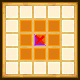

| Lv: | 140 |
|---|---|
| HP: | |
| MP: | |
| ATK: | |
| DEF: | |
| AGL: | |
| WIS: | |
| Move: | |
| Weight: | 60 |
| Weaknesses: |  |
 |
/ |  |
 |
|---|---|---|---|---|---|
| Resistances: |  |
 |
/ |  |
 |
| Immunities: |  |
| Family: |  |
Role: |  |
Element: |  |
|---|
Note: All perks/abilities denoted with an * are using unofficial translations
| Abilities | ||||||
|---|---|---|---|---|---|---|
| Level | Type | Name | MP | Element | Range | Description |
| 1 |  |
Moon Crush* ムーンスラッシュ |
46 |  |
 1-4 |
Deals moderate physical damage (200% potency) to 1 enemy, occasionally stuns |
| 38 |  |
Moonlit Hurricane* 月夜の烈風 |
117 |  |
 T (Long) |
Deals major Woosh-type breath damage proportional to ATK to all enemies in area of effect |
| 52 |  |
Emerald Slash* 翠剣の嵐 |
96 | |
 1-3 |
Deals moderate Woosh-type physical damage (190% potency) to 1 enemy in purple area and occasionally lowers Woosh Res for 3 turns, deals moderate Woosh-type physical damage (190% potency) to all enemies in orange area and occasionally lowers Woosh Res for 3 turns |
| 82 |  |
Daybreak* デイブレイカー |
100 | |
1-3 |
Deals moderate unreflectable surehit Woosh-type physical damage (200% potency) to 1 enemy 3 times, raises the user's damage dealt for 3 turns Turns needed: 3 turns (Times usable: 2) |
| Base Perks | ||
|---|---|---|
| Level | Name | Description |
| 1 | Max HP +30 | Raises max HP by 30 |
| 1 | ATK +15 | Raises max ATK by 15 |
| 1 | Crafty Woosh* バギブレイク |
When using a Woosh-type ability: Reduces the Woosh resistance of all attacked enemies by 25, for the attacker only This perk can be triggered by attacks on allies, as well as counterattacks, follow-ups, and other attacks or effects triggered by perks |
| 1 | All Elemental Crystals Drop Rate +10%* 全属性の水晶ドロップ数+10% |
Raises the drop rate of Elemental Crystals obtained in the Temple of the Conductor by 10% This perk activates even when the unit is not in the party |
| 110, 120, 130, 140 | Emerald Slash* potency +2% | Raises Emerald Slash* potency by 2% |
| 110, 120, 130, 140 | Daybreak* potency +2% | Raises Daybreak* potency by 2% |
| Awakening Perks | ||
|---|---|---|
| Awakening | Name | Description |
| 1 | Ruins Treasure Hunter* 遺跡のトレジャーハンター |
Action start until turn 10: Restores 15 MP for all allies in the surrounding large rhombus (incl. self) Action start on odd turns until turn 10: Heals 10% of max HP, raises ATK, Spell Res, and Martial Res for 3 turns |
| 2 | Bang Res +25 | Raises Bang resistance by 25 |
| 3 | Cunning Explorer* したたか探検家 |
Action start until turn 10: Triggers Bountiful Strength* (Bountiful Strength*: Generates spaces in rhombus area of effect that raise damage dealt by 15% for 3 turns for allies on those spaces only) |
| 3, 5 | Emerald Slash* potency +5% | Raises Emerald Slash* potency by 5% |
| 3, 5 | Daybreak* potency +5% | Raises Daybreak* potency by 5% |
| 4 | Crack Res +25 | Raises Crack resistance by 25 |
| 5 | Wooshmeister | Lowers Woosh-type ability MP cost by 10%, raises potency and recovery by 10% |
| 1, 2, 3, 4, 5 | Stats Up | Raises HP, MP, ATK, DEF, WIS and AGL by 5% |
| 1, 2, 3, 4, 5 | All Elemental Crystals Drop Rate +1%* 全属性の水晶ドロップ数+1% |
Raises the drop rate of Elemental Crystals obtained in the Temple of the Conductor by 1% This perk activates even when the unit is not in the party |